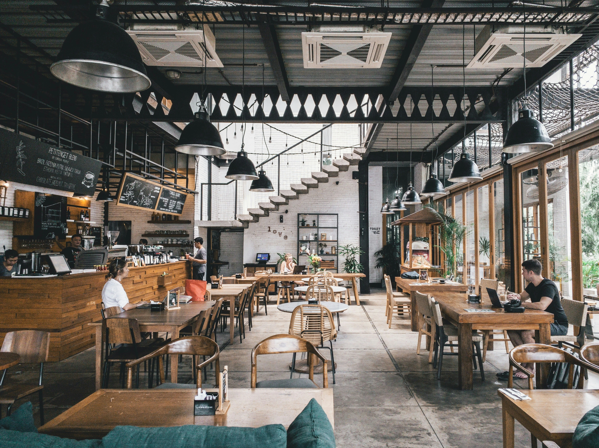

Bên cạnh cảnh quan thiên nhiên, chất lượng dịch vụ công cộng và sự gắn kết cộng đồng chính là linh hồn giữ chân du khách lẫn người dân bản địa.

Những giá trị tạo nên chất lượng sống vượt trội:
- Phủ sóng Wi-Fi miễn phí tại các khu vực công cộng và trường học.
- Hệ thống camera giám sát thông minh đảm bảo an ninh trật tự.
- Các lễ hội ánh sáng, pháo hoa và phố ẩm thực diễn ra cuối tuần.